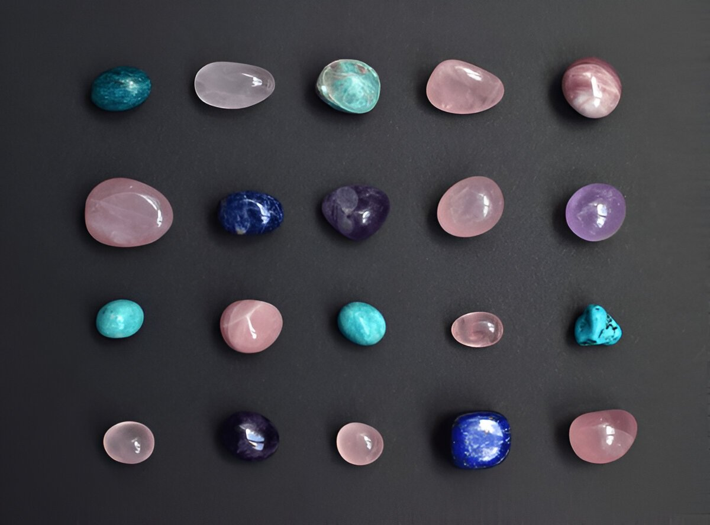

Semi-Precious
- Home
- Semi-Precious

Semi-Precious Gems: A Vibrant World of Color and Versatility
Introduction to Semi-Precious Gems
Semi-precious gems, often more abundant and affordable than their precious counterparts (diamond, ruby, sapphire, and emerald), offer a dazzling array of colors, patterns, and properties that make them ideal for jewelry, carvings, and collectors. Traditionally, these gems are distinguished by their relative availability, but many rival precious stones in beauty and durability. At Donai Gems, we celebrate the diversity of semi-precious gems, sourcing high-quality specimens to inspire your jewelry creations and collections. Drawing from the comprehensive Gem Society Encyclopedia, this guide explores key semi-precious gems, their characteristics, values, and uses.
What Defines Semi-Precious Gems?
Semi-precious gems encompass a vast encyclopedia of minerals, excluding the "Big Four" precious stones. They are valued for their aesthetic appeal, metaphysical properties, and versatility in design. While the term "semi-precious" implies lesser value, rarities like benitoite or taaffeite can command high prices. Common traits include:
-
Hardness : Most range from 5-8 on the Mohs scale, suitable for jewelry.
-
Size : Larger rubies are exponentially more valuable due to their rarity. Even small gem-quality rubies (1–3 carats) command high prices compared to sapphires, starting at around $5,500 per carat for a 1.52-carat stone, depending on clarity.
-
Colors and Patterns : From banded agates to iridescent opals, variety is endless.
-
Origins : Found worldwide, with unique varieties from specific locales like Madagascar or Brazil.
-
Treatments : Many are heat-treated or enhanced for color; natural stones are prized higher.
The Gem Society Encyclopedia lists hundreds of entries, highlighting the richness of this category.
Popular Semi-Precious Gems and Their Characteristics
Based on the Gem Society Encyclopedia, here are highlighted semi-precious gems, grouped by type for clarity. Each offers unique appeal:
Quartz Varieties (Durable, Abundant, Mohs 7)
-
Agate : Banded chalcedony in myriad colors; used for carvings and cabochons. Affordable, with patterned varieties like moss agate fetching premiums.
-
Amethyst : Purple quartz; symbolizes peace. Fine Brazilian specimens show deep color; values rise with saturation.
-
Ametrine : Bi-color amethyst-citrine; Bolivian sources yield vibrant purple-yellow zoning.
-
Carnelian : Orange-red chalcedony; ancient talisman stone, often carved.
-
Chalcedony : Microcrystalline quartz in pastels; includes chrysoprase (apple-green) and bloodstone (green with red spots).
-
Citrine : Yellow to orange quartz; heat-treated amethyst common, but natural stones from Bolivia are rarer.
-
Jasper : Opaque, patterned chalcedony; ocean jasper from Madagascar is collectible.
-
Onyx : Black-and-white banded; used in cameos.
-
Prasiolite : Green amethyst (heat-treated); subtle color for elegant jewelry.
-
Rose Quartz : Pink, often star-forming; carved into hearts or spheres.
-
Smoky Quartz : Brown-gray; Scottish cairngorm variety is historic.
-
Tiger's Eye : Chatoyant golden-brown; South African sources best for cabochons.
Feldspar Group (Mohs 6-6.5, Often Iridescent)
-
Amazonite : Blue-green microcline; Russian and Colorado sources prized for carvings.
-
Labradorite : Gray with colorful schiller; Finnish spectrolite shows full-spectrum play.
-
Moonstone : Adularescent orthoclase; Sri Lankan blue-flash varieties are premium.
-
Sunstone : Aventurine feldspar with glittery inclusions; Oregon copper schiller is rare.
Beryl Varieties (Excluding Emerald; Mohs 7.5-8)
-
Aquamarine : Blue-green; Brazilian Santa Maria color is vivid and valuable.
-
Goshenite : Colorless; rare as a gem but used in custom cuts.
-
Heliodor : Golden-yellow; Ukrainian sources yield large crystals.
-
Morganite : Pink to peach; Madagascan stones often heat-treated for color.
Garnet Group (Mohs 6.5-7.5, Diverse Colors)
-
Almandine : Deep red; star varieties from Idaho are collectible.
-
Andradite : Includes green demantoid (high dispersion) and yellow topazolite.
-
Grossular : Green tsavorite (Kenya/Tanzania) rivals emerald; hessonite is orange.
-
Pyrope : Blood-red; chrome pyrope from Arizona is vivid.
-
Spessartite : Orange mandarin garnet from Namibia; bi-color with tourmaline.
-
Uvarovite : Emerald-green drusy; rarely faceted.
Tourmaline Group (Mohs 7-7.5, Rainbow Hues)
-
Chrome Tourmaline : Intense green; Tanzanian sources.
-
Indicolite : Blue; Brazilian pegmatites.
-
Paraiba Tourmaline : Neon blue-green (copper-bearing); Brazilian originals rare.
-
Rubellite : Pink-red; Afghan and Nigerian.
-
Verdelite : Green; includes bi-color watermelon varieties.
-
Schorl : Black; common but used in carvings.
Opal Varieties (Mohs 5.5-6.5, Play-of-Color)
-
Black Opal : Dark body with fire; Australian Lightning Ridge.
-
Boulder Opal : Ironstone matrix; Queensland sources.
-
Fire Opal : Transparent orange; Mexican.
-
White Opal : Milky with play; Coober Pedy, Australia.
Other Notable Semi-Precious Gems
-
Apatite : Neon blue-green; Madagascan cat's eye varieties.
-
Azurite : Deep blue; cabochons from Arizona.
-
Chrysoberyl : Includes cat's eye (cymophane) and alexandrite (color-change).
-
Fluorite :Soft (Mohs 4) but colorful; English blue john for carvings.
-
Jadeite & Nephrite :Green jade; Burmese imperial jadeite is premium.
-
Lapis Lazuli :Ultramarine blue with pyrite; Afghan sources.
-
Malachite :Banded green; Russian for inlays.
-
Peridot :Lime-green olivine; Pakistani for large gems.
-
Rhodonite : Pink with black veins; Australian carvings.
-
Sodalite : Royal blue; Canadian for cabochons.
-
Sphalerite : High dispersion orange-yellow; Spanish sources.
-
Tanzanite :Blue-violet zoisite; Tanzanian exclusivity.
-
Topaz :Yellow, blue (treated), pink; Brazilian imperial topaz rare.
-
Turquoise : Blue-green; Persian and American (Sleeping Beauty) high-value.
-
Zircon : High brilliance; Cambodian blue (heated).
Rare exotics like benitoite (California blue), taaffeite (mauve spinel-like), or grandidierite (blue-green) appeal to collectors.
Value Factors for Semi-Precious Gems
-
Color and Saturation : Vivid, even hues command higher prices (e.g., tsavorite garnet at $1,000+ per carat).
-
Clarity and Inclusions : Eye-clean stones are premium; some inclusions add character (e.g., rutilated quartz).
-
Size : Larger gems (5+ carats) escalate value, especially in rare colors.
-
Cut and Polish : Brilliant cuts maximize fire; cabochons highlight patterns.
-
Rarity and Origin : Unique sources like Paraiba tourmaline ($10,000+ per carat) or Oregon sunstone add premiums.
-
Treatments : Irradiation, heating common; untreated stones (e.g., natural aquamarine) valued higher.
-
Market Trends : Birthstones and trends (e.g., rose quartz for wellness) influence demand.
Prices range from $1–$50 per carat for common stones like amethyst to $1,000+ for rarities like demantoid garnet.
Sources of Semi-Precious Gems
-
Brazil : Amethyst, aquamarine, citrine, tourmaline, topaz.
-
Africa : Garnet (tsavorite, spessartite), tanzanite (Tanzania), sapphire varieties.
-
Asia : Jade (Myanmar), lapis lazuli (Afghanistan), turquoise (Iran), zircon (Cambodia).
-
Australia : Opal, chrysoprase, tiger's eye.
-
USA : Turquoise (Arizona), sunstone (Oregon), peridot (Arizona).
-
Madagascar : Labradorite, celestite, beryl varieties.
-
Other : Russia (malachite, rhodonite), Mexico (fire opal, amber).
Synthetics, Simulants, and Enhancements
-
Synthetics : Lab-grown quartz, opal, and tourmaline mimic naturals but lack value.
-
Simulants : Glass or plastic imitations; distinguished by refractive index.
-
Enhancements : Heat (amethyst to citrine), irradiation (blue topaz), dyeing (agate); disclosed at Donai Gems.
Notable Semi-Precious Gems in History
-
Hope Diamond Simulants : Often blue topaz or zircon.
-
Ancient Carvings : Lapis lazuli in Egyptian artifacts; jade in Chinese dynasties.
-
Museum Pieces : Smithsonian's massive topaz (over 1,000 carats); Australian opal collections.
Caring for Semi-Precious Gem Jewelry
-
Cleaning : Warm soapy water and soft brush; avoid ultrasonics for soft stones like opal (Mohs 5.5).
-
Storage : Separate to prevent scratches; use protective settings for rings.
-
Durability : Ideal for pendants, earrings; check hardness for daily wear.
Why Choose Semi-Precious Gems from Donai Gems?
At Donai Gems, we ethically source semi-precious gems from global locales, ensuring quality, authenticity, and sustainability. Our collection features vibrant amethysts, fiery garnets, mystical moonstones, and more, perfect for custom jewelry or gifts. Explore at www.donaigems.com and let our gemologists guide you to the perfect stone.
For detailed profiles, reference the Gem Society Encyclopedia.